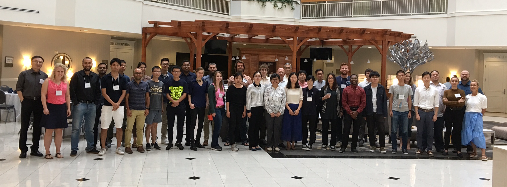

FUNWAVE-TVD Workshop 2018¶
FUNWAVE-TVD Workshop 2018 was held at the University of Delaware, Newark, DE from 25–27 July 2018. This workshop is organized by the Center for Applied Coastal Research (CACR), University of Delaware and the US Army Engineer Research and Development Center (ERDC). The workshop is open to all FUNWAVE users and interested parties.
This workshop focused on some new features added to the model recently, such as ship-wake generation, sediment transport, and model coupling and nesting framework. It also covered general topics, including the modeling of nearshore surface waves and processes such as harbor resonance, nearshore wave transformation, refraction and diffraction with complex geometries, nearshore circulation, and tsunami propagation and inundation from ocean basin- to nearshore-scales.The three-day workshop included hands-on training sessions for new users, as well as technical talks from the community of practicing and experienced users.
The workshop was hosted on Mills Cluster
Presentations
Note
Click pdf to download presentations
- FUNWAVE theory and model development – Fengyan Shi, pdf1
- Model development and applications for the US Army Corps of Engineers – Matt Malej, pdf2
- Modeling waves at FRF – Gabriela Salgado Mominguez, , pdf3
- Modeling Ship Wakes in the Intracoastal Waterway with FUNWAVE – Deidre Herbert, pdf4
- Introduction of an user interface of FUNWAVE-TVD using Jupyter notebook – Ling Zhu, pdf5
- Modeling the impact of constructed oyster reefs on nearshore circulation in Gandy’s Beach, New Jersey – Jim Chen, pdf6
- MOrphological Diffusivity EXperiment MODEX – Julia Hopkins, pdf7
- Ship-wake, Sediment Transport, and Multi-grid Nesting Modules in FUNWAVE-TVD – Fengyan Shi, pdf8
- Coastal Model Test Bed: High resolution, extended validation – Spicer Bak, , pdf9
- Numerical study on the harbor oscillations – Xiaozhou Ma, pdf10
- Interaction of Tsunamis with Local Effects – James Kaihatu, pdf11
- Preliminary numerical model of a late Guadalupian tsunamiite, Permian Basin, Texas: insight into sedimentary bedform process-response – John Pigott, pdf12
- Using numerical method to research wave-structure interaction – Ding, Haoyu, pdf13
- Fully coupled STI MOC (Specified Time Interval Method of Characteristics) morphodynamic model for the swash zone – Fangfang Zhu, pdf14
- Surface-groundwater flow numerical model for coastal barrier beach – Eranda Perera, pdf15
Tutorial
You can download the tutorial - click here
Attendees
- Alfaro-Chavarria, Henry – Univ. of Costa Rica
- Bak, Spicer – USACE, CHL, FRF
- Cao, Guangsong – Hohai Univ.
- Charles, Lynda – USACE - Portland District
- Chen, Aaron – STANTEC
- Chen, Jim – Northestern Univ.
- Chen, Yujie – University of Delaware
- Deb, Mithun – University of Delaware
- Ding, Haoyu – Univ. of Bath
- Gonzalez-Lopez, Juan – WOODPLC
- Gralher, Christine – STANTEC
- Grilli, Annette – Univ. of Rhode Island
- Grilli, Stephan – Univ. of Rhode Island
- Han, Sunghoon – Texas A&M
- Herbert, Deidre – Univ. of Florida
- Hopkins, Julia – Delft Tech. Univ.
- Inkley, Tyler – Univ. of Rhode Island
- Jefferson, Joseph – Univ. of Delaware
- Kaihatu, James – Texas A&M
- Karjadi, Entin – Inst. of Tech. Bandung
- Lam, Michael – New Jersey Inst. Tech.
- Lapann-Johannessen, Christian – HDR INC.
- Liu, Tien-Chi – National Cental Univ.
- Ma, Xiaozhou – Dalian Univ. of Tech.
- Malej, Matt – USACE - ERDC - CHL
- Miranda, Candice – USACE - Norforlk District
- Misra, Shubhra – USACE - Galveston District
- Moreland, Travis – Univ. of Oklahoma
- Perera, Eranda – Nothingham Univ.
- Pigott, John – Univ. of Oklahoma
- Podoski, Jessica – USACE - Honolulu District
- Quiroz, Marco – Pontificia Univ.
- Safak, Ilgar – Univ. of Florida
- Salgado-Dominguez, Gabriela – USACE - ERDC - CHL
- Sandanbata, Qsamu – Tokyo Univ.
- Shi, Fengyan – University of Delaware
- Torres, Marissa – USACE - Cold Regions Research and Engineering Laboratory (CRREL)
- Wesley, Matthew – USACE - Los Angeles District
- Yue, Liangyi – University of Delaware
- Zhang, Xiang – Dalian Univ. of Tech.
- Zheng, Zhenjun – Dalian Univ. of Tech.
- Zhu, Ling – Northestern Univ.
- Zhu, Fangfang – Nothingham Univ.
- Zhang, Cheng – University of Delaware
- Zhu, Tingting – University of Delaware